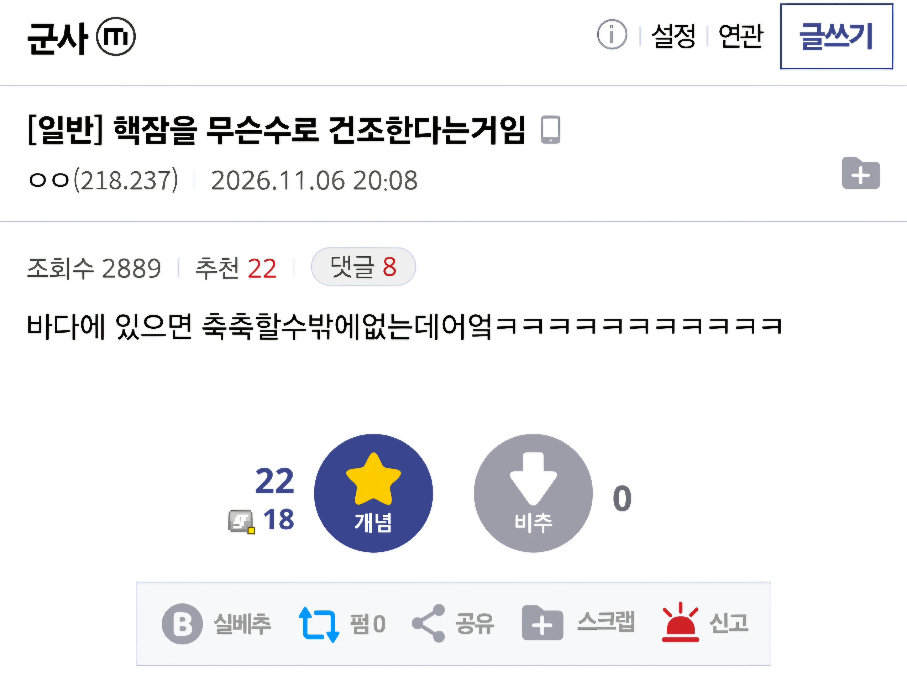
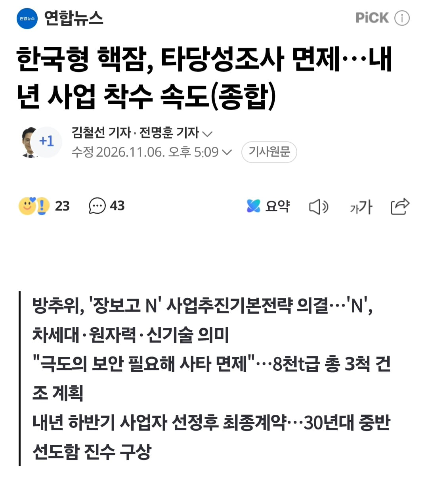

81 · 50 · 6 시간 전 · 원문


일단 8천톤급으로 3척 뽑을 예정.
수집 당시 댓글 50개
유아학교 · 7 시간 전
↳ 답글 · 커뮤니티 · 7 시간 전
↳ 답글 · 우메와모모의평범한일상 · 7 시간 전
↳ 답글 · 미카모ᅟᅠ네루 · 6 시간 전
↳ 답글 · Vv연옥의사신vV · 6 시간 전
Epoch · 7 시간 전
올 뉴 프리미엄 장보고
오늘내일 · 7 시간 전
아반떼 N이 생각난다
레드향 · 7 시간 전
그래서 드라이독에서 건조하잖아
↳ 답글 · 에궁님 · 7 시간 전
Dog은 너무 건조하면 감기걸리는뎅....
↳ 답글 · 늒네와쪄염 · 6 시간 전
개는 왜말려 ㄷㄷ
↳ 답글 · 돼지본갈비 · 6 시간 전
드라이 스낵이 되려나보다
↳ 답글 · 목동한신휴2220동장철 · 6 시간 전
짱구는 못말리잖아
포도음료 · 7 시간 전
나 어렸을때 03년도인가 임진록 했을때 조선소라는게 한국 조선의 조선인줄알았음 왜나라도 명나라도 조선소가 있길래이새기들이 한국 조선소를 베껴가는구나 생각했었음 ㅋㅋㅋ
↳ 답글 · 어리석은중생 · 6 시간 전
조선카우를 아십니까ㅋㅋㅋㅋㅋㅋ
↳ 답글 · 로그인기록 · 4 시간 전
돈벼락과 돈방석
↳ 답글 · 곰참치 · 4 시간 전
때 아닌 강제징용 논란 ㄷㄷ
김정훈 · 7 시간 전
그 큰거를 건조하려니까 핵이 필요한거지
야율아보기 · 7 시간 전
사타 빼고 가도 진수까지 10년...그보다 더 걸릴수도...
접속로그 · 7 시간 전
바다에 들어가야 축축하지 만드는 중에는 건조함
밥마을의후리카게 · 6 시간 전
장보고N(내연기관 아니라서 팝콘배기 불가능)
호롤로롤롤로 · 6 시간 전
8천톤이 뭐야 싯팔1.5만톤급은 되어야지
↳ 답글 · 뿌하하 · 6 시간 전
밀리터리 폭망의 1법칙이 시벌 처음부터 다 해봅시다야
↳ 답글 · 애아 · 4 시간 전
ㅋㅋㅋㅋㅋㅌㅋㅌㅋㅋ바로 이해간다 ㅋㅋㅋㅋ근데 하루빨리 웅장한 핵잠 보고 시포
↳ 답글 · 갓댕이좆냥이 · 6 시간 전
우리나라 배치3도 3600톤급이라 일단 저거 뽑으면서 구체적으로 정할듯
↳ 답글 · 키티호크 · 5 시간 전
지금 나오는 3천톤급도 기존거에 비하면 조온나 크더라 8천 찍고 만톤급 넘어가야지
서울의움직이는노인정 · 6 시간 전
3척이나 만들줄은 몰랐는데동해 서해 남해 한대씩 두려는건가
↳ 답글 · 세가락도요 · 6 시간 전
3척이면 작전 훈련 휴식 및 정비/수리 로테이션 해야하지 않나
↳ 답글 · Mcmaster · 6 시간 전
MA/RA랑 전력화 생각하면 1.5대 운용이라고 보는게 맞을듯
서해는 수심낮아서 핵잠은 못들어가고 순환식일듯
↳ 답글 · 응애나무 · 5 시간 전
3척이면 실전력 1-2쳑임
↳ 답글 · 오늘부터우리는 · 4 시간 전
보통은 4척씩 만듬 3척 기동 1척 정비
Freedom · 6 시간 전
누가 빨라야 20년걸린다했던거 생각나네
↳ 답글 · 여느일 · 5 시간 전
그거야 브렉시트 러우전쟁 트럼프 미친짓이 일어나니까
년차대출갚는중 · 6 시간 전
ㅇ?미국허가받음?
↳ 답글 · NoSugar · 3 시간 전
저래 뉴스나오는데 당연 허가 받았다고 생각해야지허가없음 만들어도 연료공급이 안되는데
상냥퍼리소녀 · 6 시간 전
옛날에 유령인가 하는 영화 실현되는거냐
121hp · 5 시간 전
forgodsake · 5 시간 전
그래 항모같은거 말고
콩냉이순장고 · 5 시간 전
마참내 핵추진잠을 갖는다!!!
레콩키스타 · 5 시간 전
그래서 왜 축축하지 않고 건조한건지 대답은 안하냐고
↳ 답글 · 개중년 · 5 시간 전
드라이독이라는 걸 모르면 그럴 수도 있긴 해요
고추건조기 · 5 시간 전
우리 집에 핸드카트 그것도 장보고인데
아우레우스 · 5 시간 전
8천톤급이면 버지니아급 정도 되려나?
개중년 · 5 시간 전
3척 이상 뽑는게 정배이긴 하지한 5척은 있어야됨
응애나무 · 5 시간 전
노엘갤러거스하이플라잉버즈 · 5 시간 전
근데 어따 계류하지209급 줄퇴역시키면 되나?
↳ 답글 · 키이읍 · 5 시간 전
성능개량한지 얼마 안됐는디
↳ 답글 · 아우레우스 · 3 시간 전
여차하면 수출 겸 지원용으로 돌리면 되니까.
↳ 답글 · 노엘갤러거스하이플라잉버즈 · 3 시간 전
성능개량했어도 리빙컨디션은 개량이 안되는걸요!
댓글
수집 당시 댓글 50개
유아학교 · 7 시간 전
· 커뮤니티 · 7 시간 전
· 우메와모모의평범한일상 · 7 시간 전
· 미카모ᅟᅠ네루 · 6 시간 전
· Vv연옥의사신vV · 6 시간 전
Epoch · 7 시간 전
올 뉴 프리미엄 장보고
오늘내일 · 7 시간 전
아반떼 N이 생각난다
레드향 · 7 시간 전
그래서 드라이독에서 건조하잖아
· 에궁님 · 7 시간 전
Dog은 너무 건조하면 감기걸리는뎅....
· 늒네와쪄염 · 6 시간 전
개는 왜말려 ㄷㄷ
· 돼지본갈비 · 6 시간 전
드라이 스낵이 되려나보다
· 목동한신휴2220동장철 · 6 시간 전
짱구는 못말리잖아
포도음료 · 7 시간 전
나 어렸을때 03년도인가 임진록 했을때
조선소라는게 한국 조선의 조선인줄알았음
왜나라도 명나라도 조선소가 있길래
이새기들이 한국 조선소를 베껴가는구나 생각했었음 ㅋㅋㅋ
· 어리석은중생 · 6 시간 전
조선카우를 아십니까ㅋㅋㅋㅋㅋㅋ
· 로그인기록 · 4 시간 전
돈벼락과 돈방석
· 곰참치 · 4 시간 전
때 아닌 강제징용 논란 ㄷㄷ
김정훈 · 7 시간 전
그 큰거를 건조하려니까 핵이 필요한거지
야율아보기 · 7 시간 전
사타 빼고 가도 진수까지 10년...그보다 더 걸릴수도...
접속로그 · 7 시간 전
바다에 들어가야 축축하지 만드는 중에는 건조함
밥마을의후리카게 · 6 시간 전
장보고N(내연기관 아니라서 팝콘배기 불가능)
호롤로롤롤로 · 6 시간 전
8천톤이 뭐야 싯팔
1.5만톤급은 되어야지
· 뿌하하 · 6 시간 전
밀리터리 폭망의 1법칙이 시벌 처음부터 다 해봅시다야
· 애아 · 4 시간 전
ㅋㅋㅋㅋㅋㅌㅋㅌㅋㅋ바로 이해간다 ㅋㅋㅋㅋ
근데 하루빨리 웅장한 핵잠 보고 시포
· 갓댕이좆냥이 · 6 시간 전
우리나라 배치3도 3600톤급이라 일단 저거 뽑으면서 구체적으로 정할듯
· 키티호크 · 5 시간 전
지금 나오는 3천톤급도 기존거에 비하면 조온나 크더라 8천 찍고 만톤급 넘어가야지
서울의움직이는노인정 · 6 시간 전
3척이나 만들줄은 몰랐는데
동해 서해 남해 한대씩 두려는건가
· 세가락도요 · 6 시간 전
3척이면 작전 훈련 휴식 및 정비/수리 로테이션 해야하지 않나
· Mcmaster · 6 시간 전
MA/RA랑 전력화 생각하면 1.5대 운용이라고 보는게 맞을듯
· 갓댕이좆냥이 · 6 시간 전
서해는 수심낮아서 핵잠은 못들어가고 순환식일듯
· 응애나무 · 5 시간 전
3척이면 실전력 1-2쳑임
· 오늘부터우리는 · 4 시간 전
보통은 4척씩 만듬 3척 기동 1척 정비
Freedom · 6 시간 전
누가 빨라야 20년걸린다했던거 생각나네
· 여느일 · 5 시간 전
그거야 브렉시트 러우전쟁 트럼프 미친짓이 일어나니까
년차대출갚는중 · 6 시간 전
ㅇ?미국허가받음?
· NoSugar · 3 시간 전
저래 뉴스나오는데 당연 허가 받았다고 생각해야지
허가없음 만들어도 연료공급이 안되는데
상냥퍼리소녀 · 6 시간 전
옛날에 유령인가 하는 영화 실현되는거냐
121hp · 5 시간 전
forgodsake · 5 시간 전
그래 항모같은거 말고
콩냉이순장고 · 5 시간 전
콩냉이순장고 · 5 시간 전
마참내 핵추진잠을 갖는다!!!
레콩키스타 · 5 시간 전
그래서 왜 축축하지 않고 건조한건지 대답은 안하냐고
· 개중년 · 5 시간 전
드라이독이라는 걸 모르면 그럴 수도 있긴 해요
고추건조기 · 5 시간 전
우리 집에 핸드카트 그것도 장보고인데
아우레우스 · 5 시간 전
8천톤급이면 버지니아급 정도 되려나?
개중년 · 5 시간 전
3척 이상 뽑는게 정배이긴 하지
한 5척은 있어야됨
응애나무 · 5 시간 전
노엘갤러거스하이플라잉버즈 · 5 시간 전
근데 어따 계류하지
209급 줄퇴역시키면 되나?
· 키이읍 · 5 시간 전
성능개량한지 얼마 안됐는디
· 아우레우스 · 3 시간 전
여차하면 수출 겸 지원용으로 돌리면 되니까.
· 노엘갤러거스하이플라잉버즈 · 3 시간 전
성능개량했어도 리빙컨디션은 개량이 안되는걸요!